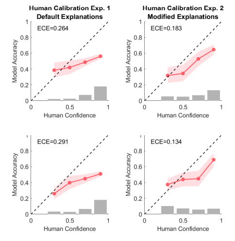
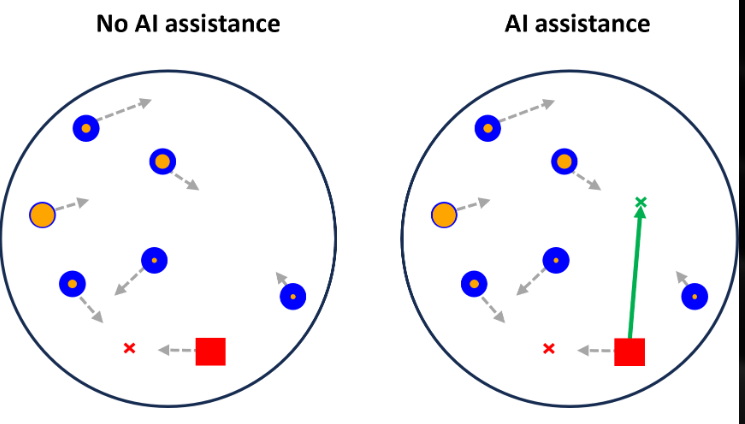

Publications
Published
-

Have you ever noticed that ChatGPT speaks like a know-it-all?
In this paper, we show that there is misalignment in the confidence LLM's are perceived to have in their answers, and what their internal confidence values reflect. In essence, LLM's routinely appear more confident than they should, despite model weights accurately reflecting the uncertainty associated with the answer. We also show how prompting LLM's to include appropriate uncertainty language in the answer text diminishes this gap between perceived and actual confidence considerably. -
"Learning with AI Assistance: A Path to Better Task Performance or Dependence? (2024)"▼Karny, S., Mayer, L. W., Ayoub, J., Song, M., Su, H., Tian, D., Moradi-Pari, E., & Steyvers, M.Proceedings of the ACM Collective Intelligence Conference
Is receiving AI assistance on tasks degrading our skills, or improving them?
To answer this question, we developed a gamified task in which participants needed to intercept moving, point-valued targets before they escape. During the game, an AI assistant suggests optimal actions to take to maximize player score. We manipulated when people were given this assistance to see whether its presence harmed or boosted their learning during the task. Despite many media fears of skill degradation and/or hopes of AI-boosted learning, we find that in our task, AI assistance neither harms nor enhances learning. This finding highlights the possibility that there exist a subset of tasks in which AI assistance can be provided risk-free, which we hypothesize may include many tasks that do not require higher-level reasoning.
In Progress
Mayer, L. W., Bocheva, D., Hinds, J., Brown, O., Piwek, L., Ellis, D. (under Review) Behavior Research Methods.
{kind=link}
Do your studies rely on groups of people? Recruiting participants for group sessions can be arduous, often costing a lot of time, effort, and resources. In this work, we demonstrate the complete lack of tools that can appropriately allocate a sample of interested participants to a set of group sessions. We then mathematically derive metrics that can quantify the effectiveness of any tool attempting to solve this problem. Finally, we develop an algorithm that outperforms any existing utility on this task using simulation and a large-scale pre-registered user study. Our scheduling utility is free and open-source, available to anyone through a web-applet.
Mayer, L. W., Karny, S., Ayoub, J., Song, M., Tian, D., Moradi-Pari, E., Steyvers, M. (under Review) Cognitive Research: Principles and Implications
{kind=link}
How can we make AI collaborate well with people? Narrowly optimizing the performance of AI agents may be convenient, but can cause frustration when people are then asked to work with this agent. In this paper, we show that people prefer AI agents that are considerate of their preferences, even when this comes at the cost of performance. We also find that certain human-centric design choices boost people’s liking of the agent, without harming the performance of the human-AI team. Our results strongly suggest that leveraging both subjective and objective metrics is crucial when designing AI agents for human collaboration.
Research Interests
People possess a remarkable cognitive flexibility enabling us to solve problems in various domains that are still completely intractable to modern methods in Artificial Intelligence. Therefore, I think that by studying human behavior we may be able to reverse-engineer some of the machinery that gives rise to these amazing abilities, uncovering the structure that may pave the way for new kinds of algorithms.
At the moment, I am working on a project series aiming to develop a computational account of causal reasoning for intervention on other agents. In these projects I will be using a considerable amount of simulation, computational modelling, and a series of custom-designed web experiments to develop reasoning models that exhibit human-like abilities to flexibly generalize to new contexts. My goal here is to show how this causal account can outperform sophisticated Reinforcement Learning models in dynamic environments, which includes most of the real world.
Whenever people are interacting with machine-learning based systems, human biases can propagate through the model leading to distorted predictions. Therefore, one strand of work I am interested in pursuing in this area is to derive the transformations that lead to better alignment, thus increasing the validity of predictions. I am also interested in addressing more engineering related concerns, such as how to use information we possess about cognition to improve the performance of machine learning algorithms trained on human-generated information. In this type of work, I like to mix and match methods from Cognitive Science and Machine Learning in combination with large, real-world data-sets.
My recent work in this area can be broadly described with the umbrella term of “Human-AI collaboration”. AI technologies are increasingly being integrated into various tools, but they oftentimes lack the ability to anticipate the needs of the human user. Using formal models of human cognition as part of these systems can help bridge this gap by describing mental processes people have in a language that AI systems can understand (math). This can lead to more efficient and effective collaboration between humans and AI systems, and can also help to identify potential pitfalls in the design of these systems.